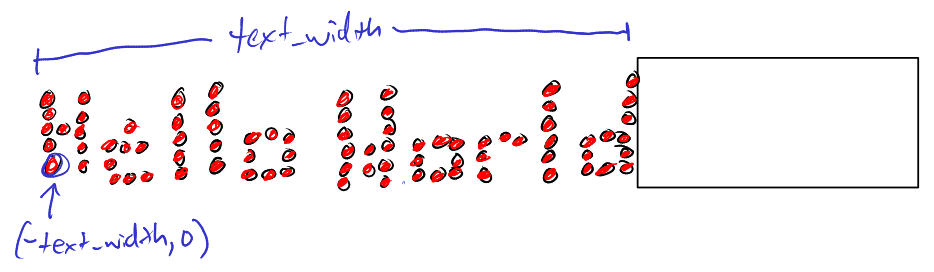

led_matrix.LEDSprite()
By developing this variable we save Raspberry Pi the effort of coverting our given "Hello World"
text at every iteration of the upcoming for loop, allowing a quicker scrolling of text.
while loop that will continuously loop infinitly.
We can do this by creating the conditional statement to always be True.
my_text_sprite so we know
how far to the left should the text be positioned before the text is off the screen.
We can do this by calling my_text_sprite.width.
led_matrix.width().
This is so we know how far to the right we should originally have the text positioned.

while loop that will keep looping until our text
has moved so far to the left that the text is no longer display.
This will be when x == -text_width. Therefore by setting our conditional
to while x > -text_width, the loop while continue to be True until
x == -text_width

while loop we want to clear the LED matrix display from the previous
display, using led_matrix.erase()
(x,0)
led_matrix.show()
while loop the text 1 pixel to the left on the display.